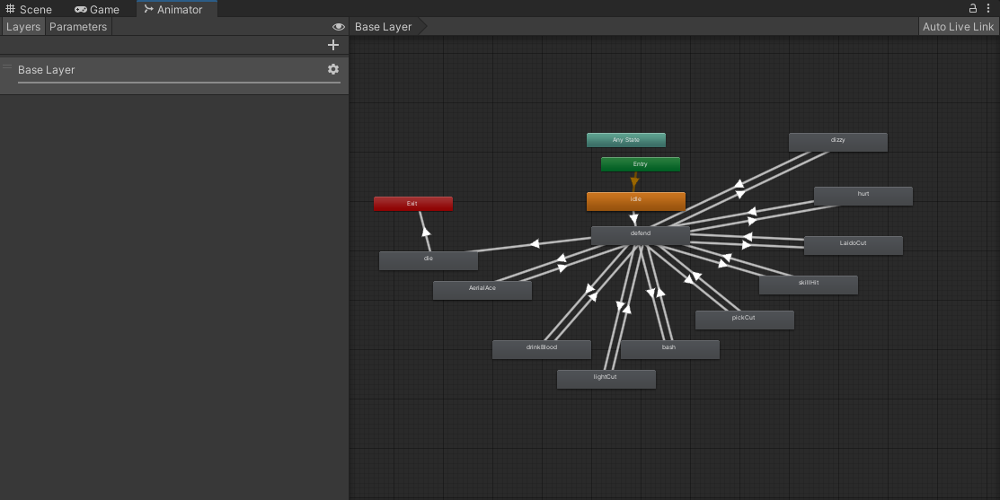

（冰海战记真好看，大家快点都去看）
前言
寒假终于来力，有时间摸一摸博客了。今天就来介绍一下我一直很想写的有限状态机（FSM）。它虽然起步比较难，但是对于代码结构的优化和游戏人物的控制真的非常的舒适（起码不用声明114514个布尔值来控制角色的动作了）。如果有学弟看到我的这篇拙作也可以挑战一下使用有限状态机来做三轮捏（bushi
为什么要使用FSM
一个哈人的bug
在解答这个问题之前，我想问问读者一个问题：
假如你是李华，你想通过一个程序来控制游戏内一个怪物的各种状态（比如走路，静止，攻击，跳跃，冲刺等等），让这个怪物血量每减少三分之一的时候会跳在中间捶地板，在平常的时候可以抡大锤砸玩家，在被逼到死角的时候使用锤子砸地形成一个冲击波，在把玩家逼到死角的时候会自动往后跳不至于逼死玩家。。。（假骑士是什么，我不知道）这样应该怎么写呢？我想大多数人会在控制怪物的脚本里先洋洋洒洒声明一堆布尔值（至少以前我是这样的）：
1 | private bool isLuning; //正在抡大锤 |
我不能说这样做不对，因为事实上这样做是可以实现功能的。但是这样做却有一个隐患，就是切换不同状态时会发生问题。举个例子，当假骑士（你刚刚说了假骑士对吧，对吧？！）抡锤子时正好把玩家逼入了死角，同时血量掉了三分之一时，它应该被切换成什么状态呢？这个时候三个控制状态的布尔值都是真的，那假骑士这个时候要干什么，我是想都不敢想（
当一个角色的状态有很多时，如何顺利进行不同状态之间的过渡就成了我们头疼的事情。如果是怪物状态的控制那还好，因为怪物后面都是有着固定的逻辑的。但如果是玩家状态的控制呢？要知道，玩家背后的逻辑可是敢在酒吧里点炒饭，吃程序员不吐骨头的广大游戏玩家啊。当游戏玩家在奔跑时按下飞行键，或者在怕爬梯子时按下跳跃键，产生的后果肯定是让人啼笑皆非的。
而在上述的问题中，眼尖的读者就能看出真正的问题所在：这些问题的产生都是由于两个不同状态的同时进行导致的。也就是在跳跃时又进行了飞行的功能，在走路时又进行了奔跑的功能。那这样的话，我们只要用枚举的方式把所有状态囊括在一起不就好了嘛。因为枚举只能有一个状态，恰好可以完美解决上面的状态并发问题。而这个思想，也就是我今天想要写的有限状态机（FSM）。
一个有限的状态机
FSM，又称为有限状态机。它的意思就是我们列举出一系列有限的状态（以玩家本身为例，状态就有奔跑，静止，攻击，跳跃等等），以及这个状态应该运行的代码，其中包括状态开始，状态进行和状态结束的方法（比如跳跃的时候角色要先起跳，然后一直在半空什么的）。接着，我们编写一个程序来控制状态的切换以及进入一个状态在什么阶段应该运行的相关代码。由于这个状态是枚举的，而且有关动作只有在玩家当前为这个状态时才可以执行，所以理论上可以完美解决上面的问题。
这个结构其实在Unity内部就有了实践，那就是animator组件：

每个动画都被框在了一个状态里，只有当控制器运行到了这个状态时才会播放里面的动画，根本不会出现两个动画并发的现象，而我们的有限状态机也会沿用这个思想，只不过每个状态里存储的不是动画，而是一串串代码。
如何构建有限状态机
有限状态机的图解如下：
状态继承的接口IState
正如上文所说，状态机应该拥有进入这个状态，维持这个状态，以及退出这个状态的相应动作（就像碰撞检测中OnColliderEnter,OnColliderStay,OnColliderExit这仨一样）。所以作为每个状态都应该继承的接口应该有这三个对应的方法：
1 | public interface IState |
角色所有状态的枚举
上文也提到了有限状态机的枚举思想，所以我们也需要一个枚举来囊括角色的所有状态：
1 | public enum StateType |
当然，这些状态都是你自己定的，上面这个例子的状态仅作为参考。
每个相关状态的类
接着就是每个状态独占的一个类了。通过继承IState接口，控制器脚本可以直接调用相关状态类的方法来控制角色的动作（这里以角色进场的状态为例）：
1 | public class EnterState : IState //继承Istate接口 |
这个框架仅仅是最简单的状态。如果你的状态还需要更多的动作的话还要进行更多的操作（这里以角色的攻击为例，代码我不想细说，只是体现你可以在上面框架的基础上随便添加别的东西而已）（一个猜想，你是不是想水字数）：
1 | public class PAttackState : IState |
重头戏：控制器脚本
控制器脚本是十分重要的脚本，可以说是有限状态机的核心所在。它的任务是记录当前的状态，根据不同条件切换状态，以及执行相关状态的代码。这也是有限状态机的难点所在。
下面贴出的代码只是针对之前项目特化的控制器脚本，大家扫一眼就好。接着我会分模块讲解控制器脚本应该有什么。（你是不是又在水字数）
1 | using System.Collections; |
声明部分
1 | public GameObject character; |
声明的变量主要包括两个部分：
1.杂七杂八部分
这个部分主要是玩家控制角色的音效、动画、血量属性方面的变量。当然这也是每个角色脚本必须的东西。（上面自定义的FSM_blabla类也是这个里面的，不用在意）。
2.状态控制相关
（1)字典states：它主要用来绑定每个枚举类型（状态名）和状态类（这个状态应该进行的方法）。通过这个字典我们可以直接通过当前角色的状态来找到这个状态应该执行的代码
（2）当前状态的类：虽然有字典，但是通过字典找到方法的过程未免还是太慢了。所以还是要个状态类存储当前状态
（3）当前状态的枚举：存储当前状态的相关枚举。没有这个，有限状态机的实现可以说是不可能。
Start方法
1 | protected virtual void Start() |
还是三类：
1.杂七杂八部分
也就是获取相关组件，把角色基础属性确定好。
2.注册键值对
往声明的字典里狂暴注入该角色应该有的所有状态的键值对，其中键值对里new EnterState(this)里面的this指的是控制器脚本（别忘了状态类构造方法里的变量:FSM manager）
3.设置入场状态
如果你的角色有什么入场状态（比如芬达哥开场要来一句战吼：“啊！！！！！芬达！！！！！！”什么的），最好在这里就可以转换状态了。
Update方法
1 | protected virtual void Update() |
这就很简单了。如何让维持这个状态的方法一直运行？直接把它丢进Update里就行了！
状态转换方法和重载
1 | #region 转换状态方法及重载 |
看起来重载方法实在是pang多，但实际上只是针对某些状态特化的方法而已（比如对造成伤害的重载加了伤害量，防御的重载加了防御），真正的切换状态方法是这个：
1 | public virtual void TransitionState(StateType type) |
首先，执行上一个状态的OnExit方法，然后切换当前的状态（这里可以看到是通过字典进行的搜索），最后执行切换后的OnEnter方法。
当然，这个还是太粗糙了。如果有些状态需要调整角色本身的属性数据该怎么办呢？所以就有了后面的重载方法。在重载方法中有很多需要添加的操作，但上面这三个是万万不能少的。
然而这个重载方法是为了什么存在的呢？
1 | public virtual void TransitionState() |
答案是水行数 答案是为了子类对切换状态的重写啊。一个游戏里不同角色都可以使用有限状态机，而上面的代码正好可以作为所有有限状态机的父类。写这么一个空方法就是为了后续的扩展操作。说不定有些角色不需要声明当前状态就能切换状态呢？
总结与Q&A
总结
综上，有限状态机的优点就是可以在拥有很多状态的角色时，可以完美实现不同状态的过渡和存储。但是它也有着明显的缺点：代码量的指数级提升和更高编程技巧的掌握。所以当一个角色的状态不是很多的话，有限状态机可能并不是一个很好的选择。同时，我在上面讲的仅仅是一个有限状态机最最基础的框架，在正常的游戏开发中还需要加入这个角色特化的相关变量和方法。最后是一些可能存在的问题，我先写上了：
1.有限状态机是只能用在怪物逻辑上吗？
在目前的教程中，有限状态机很多都用在怪物的逻辑上面。比如怪物一开始的状态是巡逻，但是一旦玩家接近怪物，怪物的状态就会切换成追逐状态，也就是追着玩家不放，直到玩家远离怪物一段距离，然后重新恢复巡逻状态。要想实现这个效果，使用有限状态机无疑会十分轻松。但是实际上，有限状态机也可以运用于玩家本身上，理由的话我在上文也提到过：为了防止不同状态过渡时产生的问题。
2.如果我要对多种怪物和玩家的逻辑运用有限状态机应该怎么操作？
答案是把FSM作为父类，然后声明不同怪物的控制器脚本继承这个类。这样的话要注意字典里的键值对，父类只能注册大家都有的状态的键值对，不然就会出错。并且如果不同怪物的相同状态有着不同方法（比如诺斯克和芬达哥都有进场状态，但是芬达哥是啊！！！！！！芬达！！！！！！，诺斯克是给你来个大变活人），那一定要区分这些状态（比如诺斯克进场的状态类叫做NEnterState，芬达哥进场的状态类叫做FEnterState），毕竟类是没有重载这个东西的。
（寒假来了，开始爆更模式）
若没有本文 Issue，您可以使用 Comment 模版新建。